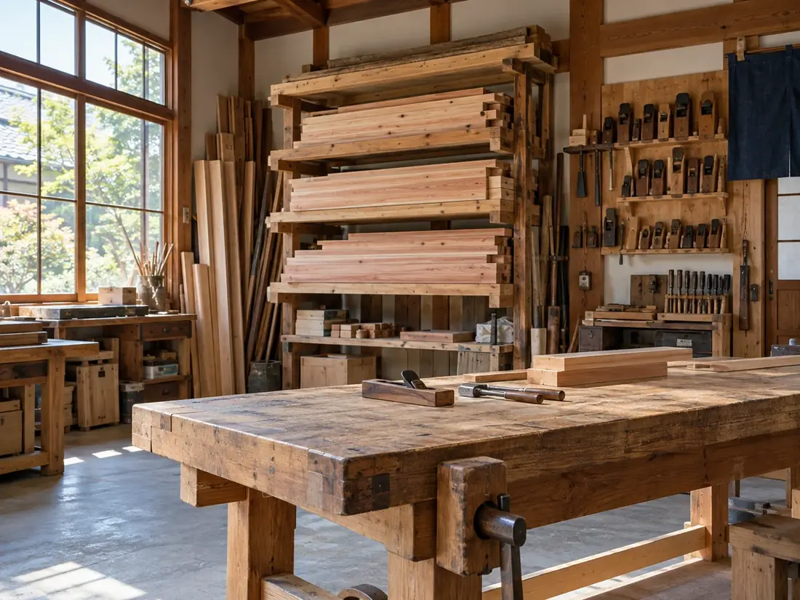

会社の概要
たてまえ工務店のこと。
| 名称 | 木組みの家 たてまえ工務店 |
|---|---|
| 所在地・電話 | 架空県灯町本町【要確認：番地・電話番号】（事務所・作業場） |
| 事業内容 | 木造住宅の設計・施工、リフォーム、修繕、点検 |
| 対応地域 | 灯町、北灯市、港見町、杉沢町 |
| 相談の受付 | 平日・土曜 9:00〜18:00 |
家づくりの体制
窓口は、最初から最後までひとりの現場監督。
「誰に聞けばいいか」で迷わないよう、窓口をひとりに決めています。現場監督が、設計担当・大工・点検担当と同じ社内でつながっています。
- 窓口現場監督 お施主さまのただひとりの窓口
- 設計設計担当 間取り・図面・申請
- 大工大工 作業場での刻み・建て方
- 点検点検担当 引き渡しのあとの点検
九・十保証と点検
引き渡しのあとの決まりごと。
| 保証の書面 | 内容と期間を書いた書面を、契約のときにお渡しします |
|---|---|
| 点検 | 1年・5年・10年目に伺います。費用はかかりません |
| 不具合のとき | 保証の範囲かどうかをその場でお伝えし、範囲の外なら直す前に見積もりをお出しします |
| 窓口 | 建てたときと同じ現場監督です |
保証の範囲と期間、建設業許可の種類と番号、加入している保険は【要確認】です。